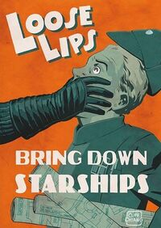

Signal Cartel Friendly Fire Guide
As every Signaleer knows, we are not a PVP corp. However, we are all aware that PVP will eventually find us, regardless of our intentions. Our Friendly Fire Guide is focused on the procedures and protocols to deal with both wanted and unwanted friendly fire.
"Friendly fire is legal in Signal to support live fire training events among Signaleers ONLY and Signaleer-on-Signaleer duels.” – Mynxee, Signal Cartel Co-founder
Dueling and Combat Training[edit]
The understanding of offensive and defensive modules is one of the keys to survival in any PVP environment. Proper training accelerates understanding, which leads to competence and eventually mastery. Combat training among corpmates should be done in controlled environments. As a courtesy, Leadership prefers that such training events be advertised ahead of time and disclaimers shared regarding possible losses.
Note: Ideally, the test server Singularity (aka Sisi) is the preferred location for live fire exercises.
If you decide to duel with a fellow member or organize a free-for-all among corpmates, be sure to agree to the rules of engagement before starting. Once the combat starts, respect those agreements. For example, if you decide to duel until you get into hull then stop the engagement once hull damage is inflicted. Generally, we discourage dueling to ship loss because it adds more follow-up paperwork for Leadership.
Sometimes things don't always go as planned during a duel or combat training. If you decide to engage in these activities and you lose a ship, work out the issue within your party. Please be respectful of Leadership's time when needing help resolving undesirable outcomes in these risky voluntary activities.
Our corp killboard is available at this link.
General Guidelines[edit]
- Dueling and combat training are ONLY valid between fellow Signaleers (that means no out-of-corp pilots may participate).
- As always, please remember that podding is a Credo violation.
- Take pods off of your overview to avoid this mistake.
- Report your kills in accordance with our Kill Reporting Policy (also see the "Reporting" section below).
- If possible, please use Sisi (the public test server). Some benefits of Sisi:
- Avoids inadvertent mistakes
- Minimizes loss of ISK
- Avoids Credo infractions
- Decreases Leadership's paperwork burden
Consent IS Required[edit]
Firing an offensive weapon/module at a fellow Signal Cartel member without their consent IS NOT permitted by the Credo. You must get consent from fellow member(s) before engaging in mutual combat, preferably in a logged chat or EVEmail exchange.
Soldier of Fortune (SoF) AIR Career Program[edit]
Signaleers are allowed to participate in the Soldier of Fortune AIR Career Program. Leadership hopes that this will help Signaleers experience and learn PVP in a controlled environment while also advancing their career program progress.
SoF Rules[edit]
- Solider of Fortune activities are ONLY allowed between fellow Signaleers (again, that means no out-of-corp pilots may participate).
- Please send Leadership an EVEmail listing the engagements to help sort training kills from real kills in accordance with our Kill Reporting Policy.
- Ships used should be shuttles, corvettes, or T1 frigates
- Activity should be in an out of the way high sec system and away from celestials or stations/structures.
- If in a fleet, Leadership also expects a posted AAR outlining the fleet member’s experiences and learnings from the engagement.
- Please make the post in our
🗪ready-roomforum channel using the AAR tag.
- Please make the post in our
- If you or the fleet is jumped, please disengage. This is not a stand-and-fight type of scenario.
- Again, so it is crystal clear, podding is prohibited.
Activities Approved by Leadership[edit]
- Duels – Invite a capsuleer to a duel, Participate in duels (5/10/15)
- PVP – Destroy player ships (2/3/4/5) – remember, no podding!
- EWAR – Target Paint/Weapon Disrupt/Web/Warp Disrupt/Scram 5 player ships
- Cap Warfare – Drain energy (50/100/250GJ), Neut 100/500/2000GJ)
- Support – Repair (500/1000/2500) Armor HP on the player ship, Boost (500/1000/2500) Shield HP on the player ship
Solo Activities[edit]
- Career Agent Missions – 10 missions
- Social – Add a contact, send a chat, send an email, Join a Corp (but why would you ever leave?)
- Combat – kill 75 Frigates/Destroyers/Cruisers (can be rats)
- Destruction – Lose ships (1/5/10/15/20) – can be against rats
Forbidden Activities[edit]
- Faction Warfare – Participation in faction warfare is NOT allowed in SC.
Safety First[edit]
Be aware that you can lose your ship just as quickly in high sec as anywhere else. For this reason, disclose details of your activities only to those that need to know or whom you trust. This is true regardless of friendly fire settings. Spais and opportunists are a fact of life in EVE and Signal Cartel.

Image used with permission by Cliff Chiang.
{kind=link}
Determine Real Threats[edit]
Sometimes a fellow member might find it funny to use a non-damaging offensive module (ECM, webifier, warp scrambler/disruptor) on you without your consent. This does not mean they want to kill you...they may just be joking around. If this upsets you, please remain calm and request that the other member cease engaging you. If they fail to honor your request, then treat it like an attack (see below).
Help! I'm Being Attacked![edit]
If a corp member activates a weapon or offensive module on you without your consent, first assess the situation. If there is a real threat to your ship/pod/loot/salvage, you ARE allowed to fire back. Other corp members ARE allowed to defend you in such situations. The priority should be for everyone to escape without losing their ships. If you see an opportunity to do so, take it.
Reporting[edit]
- If you are the victim of non-consensual friendly fire which causes the loss of your ship or pod, report it at once to Leadership via EVEmail. BE SURE to include a link to your loss mail(s), a complete description of what transpired, and relevant chat logs. Without that information, we cannot properly look into the situation and decide next steps.
- If (after reviewing the information you provide) we determine that the involved members are a threat to the safety of others, we will kick them as soon as possible. If they are docked or logged off, that will happen immediately. If they are logged in but undocked, they'll be automatically queued for removal at downtime.
- If you appear as an aggressor on a friendly fire killmail of a corpmate, you must report it in accordance with our Kill Reporting Policy. In cases where multiple Signal Cartel pilots are listed as aggressors, the top damage dealer must make the report. We don't need EVEmails from each of you for the same incident.
References[edit]
Original forum post: Signal Cartel Friendly Fire Guide
Soldier of Fortune Guidelines: